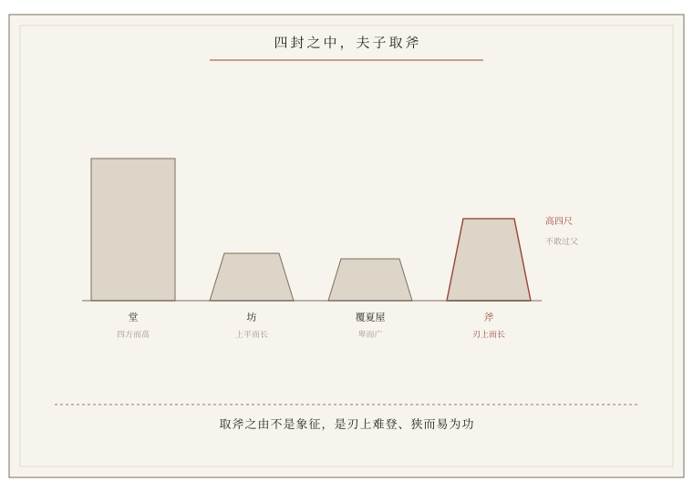

檀弓上 · 三·九十七 · 第 300 课
孔子之丧，有自燕来观者，舍于子夏氏。子夏曰：「圣人之葬人，与人之葬圣人也，子何观焉？昔者夫子言之曰：『吾见封之若堂者矣，见若坊者矣，见若覆夏屋者矣，见若斧者矣，从若斧者焉，马鬛封之谓也。』今一日而三斩板，而已封，尚行夫子之志乎哉！」
说什么事：孔子去世，有一位从燕国赶来观礼的人，住在子夏家里。子夏说：圣人葬人，和人葬圣人，用的是一样的礼，你有什么可看的？从前夫子说过：我见过坟堆得像堂基的、像堤防的、像覆屋的、像斧刃的，我取那像斧刃的，俗称「马鬛封」。如今一日之内三度斩板，坟就筑成了——这大约是照着夫子的心意做吧。
落在哪一层：葬封之制。论「俭而易成，合于周度」。
为何编在此位：上一课国子高斥封树，是「非周礼」的一偏；此课孔子取斧形之封，是「周礼」内的俭。一非一是，相邻而读，方见礼家取舍之细。
【经】孔子之喪，有自燕來觀者，舍於子夏氏。子夏曰：「聖人之葬人，與人之葬聖人也，子何觀焉？昔者夫子言之曰：『吾見封之若堂者矣，見若坊者矣，見若覆夏屋者矣，見若斧者矣。從若斧者焉，馬鬣封之謂也。』今一日而三斬板，而已封，尚行夫子之志乎哉！」
【注】與，及也。封，築土為壟。堂形四方而高。坊形旁殺，平上而長。覆謂茨瓦也。夏屋，今之門廡也，其形旁廣而卑。斧形旁殺，刃上而長。孔子以為刃上難登，狹又易為功。俗間名。板，蓋廣二尺，長六尺。斬板，謂斷其縮也。三斷止之，旁殺，蓋高四尺；其廣袤未聞也。《詩》云：「縮板以載。」尚，庶幾也。
【疏】此一节论葬夫子封坟之法。燕国人闻葬圣人，恐有异礼，故从燕来鲁观之。「舍于子夏氏」，舍，住也，燕人来住子夏家也。「子夏曰：圣人之葬人，与人之葬圣人也，子何观焉」，与，及也。子夏谓燕人云：若圣人葬人，及人葬圣人，皆用一礼，而子远来，何所观乎。王肃云：「『圣人葬人与』属上句以言。若圣人葬人与，则人庶有异闻，得来观者；若人之葬圣人，与凡人何异，而子何观之？然公西赤为志，遍用茸荃礼，子夏谓葬圣人与凡人不异者，今谓圣凡相葬，礼仪不殊，而孔子葬异此，是贤葬圣师，别自表义，不施世为法；而子夏恐燕人学敩此礼，故悬而拒之，云其礼本应如一也。而下又述昔闻夫子见四封之异者，此处可共，是许燕人学之，故备陈其教，以赴远观之意。」「昔者夫子言之曰：吾见封之若堂者矣」，既已语燕人无观，又此历述孔子之言者，欲以此语与燕人为法。封谓坟之也，若如堂基，四方而高。「见若坊者矣」，坊，堤也；堤坊水，上平而两旁杀，其南北长也；言又见有筑坟形如坊者也。「见若覆夏屋者矣」，殷人以来，始屋四阿；夏家之屋，唯两下而已，无四阿，如汉之门庑；又言见其封坟如覆夏屋，唯两下而杀，卑而宽广。又见封如斧之形，其刃向上，长而高也。既言四坟之异，夫子之意，从若斧者焉，以为刃上难登，狭又易为功力。子夏既道从若斧形，恐燕人不识，故举俗称马鬛封之谓也，以语燕人。马鬷鬛之上，其肉薄，封形似之。「今一日而三斩板」，子夏前述明夫子语，又引今会古竟，更述其今葬孔子。既是从斧之坟，「今一日」者，谓今作孔子坟，正用一日之功，俭约不假多时；于一日之中而三斩板者，谓作坟法也。筑坟之法，所安板侧于两边，而用绳约板；令立后，复内土于板之上，中央筑之，令土与板平，则斩所约板；绳断，而更置于见筑土上，又载土其中，三遍如此，其坟乃成，故云「今一日而三斩板」也。「而已封」者，为三遍设板，筑土而止已其封也。「尚行夫子之志乎哉」者，尚，庶几也；言今一日三斩板，是庶几慕行于孔子平生所志也，以示燕人。注「板盖」至「以载」：知「板，盖广二尺」，案《祭义》曰「筑宫仞有三尺」，是墙高一丈；《公羊传》云「五板为堵」，则板广二尺，故五板高一丈也。知板长六尺者，以《春秋左氏》说雉长三丈、高一丈，《公羊传》云「五板为堵，五堵为雉」，按五堵而为雉，则堵长六尺，故《诗笺》云「雉长三丈」，则板六尺。知「盖高四尺」者，以上合葬于防，崇四尺，今葬夫子不可过之，又板广二尺，三板斜杀，唯高四尺耳；其东西之广、南北之袤，则未闻也。引《诗》「缩板以载」，是《大雅·绵》之篇也，引之者，证缩为约板之绳。孙毓难云「孔子墓，鲁城北门外西，坟四方，前高后下，形似卧斧，高八九尺；今无马鬛封之形，不止于三板，记似误」者，孙毓云据当时所见，其坟或后人增益，不与元葬坟同，无足怪也。
自燕来观 从燕国来观葬礼。燕，北疆之国，去鲁远。
舍于子夏氏 住在子夏家。舍，止、住。
圣人之葬人，与人之葬圣人 「与」，注「及也」。两读：一读「圣人葬人」与「人葬圣人」为两事；王肃读「圣人葬人与」为句，语气不同。见下第五层。
封 注「筑土为垄」，即坟堆。
若堂 像堂基：四方而高。
若坊 像堤防：两旁杀（斜面收），上平而长。
若覆夏屋 像覆盖着的夏代屋子。夏屋，注「今之门庑」，两下而杀，卑而宽广。覆，注「茨瓦」。
若斧 像斧刃：两旁杀，刃向上，长而高。
从若斧者焉 取那像斧的。从，就、取。
马鬛封 俗称。马鬛，马颈上的长毛；封形像马鬛的截面，薄而高。
三斩板 三次斩断约板之绳。板，筑坟用的夹板，注「广二尺，长六尺」。
缩 注引《诗》「缩板以载」，缩即约板之绳。
尚 注「庶几也」。庶几，差不多、大约合乎。
孔子去世，有一位从燕国赶来观礼的人，住在子夏家里。子夏说：「圣人葬人，和人葬圣人，用的是同一套礼，你有什么可看的？从前夫子说过：我见过坟堆得像堂基的，像堤防的，像覆屋的，像斧刃的；我取那像斧刃的——俗称『马鬛封』。如今一日之内三度斩板，坟就筑成了。这大约是照着夫子的心意在做吧。」
此节的骨头是三段：子夏拒客、夫子四封、今葬从斧。
第一段，拒客。 燕人来鲁，为的是「恐有异礼」——葬圣人，总该有点不一样。子夏一口回绝：圣凡相葬，礼仪不殊。这一句极硬，把「圣人当有异礼」的期待整块打消了。
第二段，四封。 子夏既拒，又转述夫子四封之说。这不是自相矛盾。疏引王肃解得极细：先拒其「观异」，后许其「学法」——你要看的不是什么奇礼，而是这四种封形之中，夫子取了哪一种。拒的是猎奇，许的是学问。
四封的形，注一一给了几何：堂，四方而高；坊，上平而长，两旁收；覆夏屋，两下而收，卑而广；斧，两旁收，刃向上，长而高。四种都是坟形，都合于当时的葬制，只是在「高」「长」「广」「杀」之间各取一势。
夫子取斧。理由注得极实：刃上难登，狭又易为功。难登，是不让人轻易爬上去；易为功，是筑起来省力。一句防人，一句省己。
第三段，今葬。 「一日而三斩板」——一日之内，三遍夹板、填土、斩绳，坟就成了。疏把工序说得清清楚楚：夹板立于两侧，用绳约住；填土其中，与板平；斩断约绳，把板移上去，再填；三遍而止。板广二尺，三板斜杀，高四尺。
四尺之数，注给了根据：孔子合葬于防时，坟崇四尺；今葬夫子，不可过之。所以三板取高四尺，正合前制。
末一句「尚行夫子之志乎哉」，尚，庶几也。子夏不敢断言「这就是夫子的意思」，只说「庶几」。这一字之谦，是礼家的常态：人的心意不可知，只能以行事相拟。
第一层 「圣凡同礼」 此节最重的一句，是子夏的「圣人之葬人，与人之葬圣人也，子何观焉」。它否定的是一种很自然的想法：大人物该有大礼。子夏说没有。礼是一套公共的度，人在其中，不因贤圣而加厚。
这一句与 284「丧不可不深长思也」注「非所托」是一条线：礼不为个人的意愿与身份另开一扇门。
第二层 四封之取，取的是「势」而非「贵」 四种坟形，皆是当时实有之制，无一是僭越。夫子在四者中取斧，所据者两条：难登、易功。这两条都是实用的，不是象征的。礼家论形制，常被后人读成象征（斧者，断也；堂者，尊也），而此节注所给的，只有工程与人力。
读古注当守此界：能落实到尺寸与工力的，先按尺寸与工力读；不能落实的，才谈义。
第三层 四尺之数的克制 三板取高四尺，因孔子合葬于防时崇四尺，葬夫子不可过之。这是一个儿子对父亲的度：不敢高过父亲。孔子之丧，弟子若欲崇其封，易如反掌；而他们只做到四尺。这不是省钱，是不敢。
第四层 王肃与孙毓两说 王肃把「与」读作句末之词（「圣人葬人与」），使全句成为「若圣人葬人，则人庶有异闻」的假设语气；疏采其意而铺陈之。孙毓则据当时所见孔子墓「高八九尺，形似卧斧」，断「记似误」。疏答之曰：后人增益，不与元葬同，无足怪。
两说都有价值：王肃解的是文气，孙毓校的是实物。疏并存之，正是礼记之学的常态——义理与实物，各留一线。
第五层 「尚」字的分寸 「尚行夫子之志乎哉」，若作断言，便是「我们完全照夫子的意思做了」；作「庶几」，则是「大约如此」。子夏取后者。人的心志不可尽知，尤其是死者；生者所能做的，只是把可验的部分（尺寸、工序、一日之功）做到，其余交给「庶几」。
与今日何干 今人为长者修墓，常以高大为孝。此节给的尺是四尺——不敢高过父亲。今日不必照四尺，但那个「不敢」可以照。
| 左 | 右 |
|---|---|
| 自燕来观 | 恐有异礼 |
| 礼仪不殊 | 子夏之拒 |
| 封之若堂 | 四方而高 |
| 若坊 | 上平而长 |
| 若覆夏屋 | 卑而广 |
| 若斧 | 刃上而长 |
| 从若斧 | 夫子所取 |
| 一日三斩板 | 今葬之实 |
| 高四尺 | 不敢过父 |
画一处鲁城之外的墓地，视点平视略远。画面中央是一座新筑的坟，形如斧刃：底部宽、向上收、顶为长脊，通体新土，坟侧还倚着两块夹板与一段约板之绳。坟之左前，一位士人（背向观者、负行囊、仰头凝视坟形）立于道旁；坟之右后，一位深衣者（正面、右手前指坟脊）立于树下。远处另见三座形制不同的旧坟，只作轮廓：一方而高、一平而长、一卑而广。不写文字、不画人面细节。赭色只用在坟脊那道新土的边线，与倚着的那段约板之绳。
